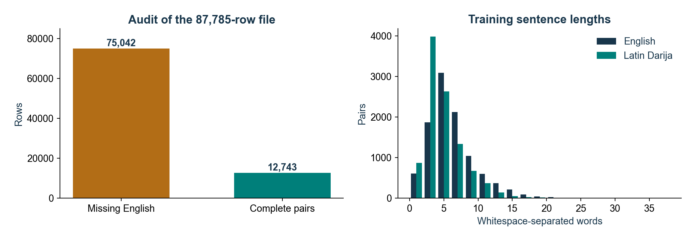

UIR / Advanced NLP / TP B / 2026-2027
{
"raw_rows": 87785,
"missing_english": 75042,
"complete_pairs_before_deduplication": 12743,
"duplicate_pairs_removed": 121,
"usable_pairs": 12622,
"connected_groups": 11036,
"largest_group": 29,
"seed": 42,
"split_strategy": "connected source/target groups; approximately 80/10/10",
"source_column": "eng",
"target_column": "darija",
"target_script": "Latin Darija (case preserved)",
"vocabulary_size": 2000,
"max_length": 48,
"splits": {
"train": {
"pairs": 10110,
"source_mean_tokens": 10.369040553907023,
"target_mean_tokens": 11.598615232443125,
"source_truncation_fraction": 9.891196834817012e-05,
"target_truncation_fraction": 0.000791295746785361
},
"validation": {
"pairs": 1245,
"source_mean_tokens": 10.706827309236948,
"target_mean_tokens": 11.981526104417672,
"source_truncation_fraction": 0.0008032128514056225,
"target_truncation_fraction": 0.001606425702811245
},
"test": {
"pairs": 1267,
"source_mean_tokens": 10.363851617995264,
"target_mean_tokens": 11.515390686661405,
"source_truncation_fraction": 0.0007892659826361484,
"target_truncation_fraction": 0.0015785319652722968
}
}
}